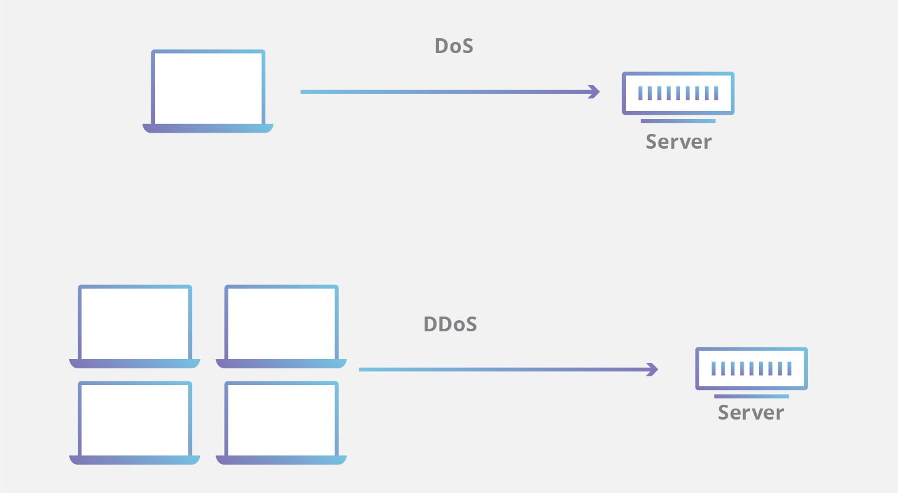

Denial of Service (DOS) is a general attack category in which access to network applications or data is denied
to intended users. Denial of service (DOS) conditions may be created via many techniques - many of which are
related to previously mentioned vulnerabilities.
Victims of DoS attacks often target web servers of high-profile organizations such as banking, commerce, and media companies, or government and trade organizations. Though DoS attacks do not typically result in the theft or loss of significant information or other assets, they can cost the victim a great deal of time and money to handle.
There are two general methods of DoS attacks: flooding services or crashing services.
Flood attacks occur when the system receives too much traffic for the server to buffer, causing them to slow down and eventually stop. Popular flood attacks include:
Buffer overflow attacks – the most common DoS attack. The concept is to send more traffic to a network address than the programmers have built the system to handle. It includes the attacks listed below, in addition to others that are designed to exploit bugs specific to certain applications or networks .
ICMP flood – leverages misconfigured network devices by sending spoofed packets that ping every computer on the targeted network, instead of just one specific machine. The network is then triggered to amplify the traffic. This attack is also known as the smurf attack or ping of death.
SYN flood – sends a request to connect to a server, but never completes the handshake. Continues until all open ports are saturated with requests and none are available for legitimate users to connect to.
An additional type of DoS attack is the Distributed Denial of Service (DDoS) attack.

A DDoS attack occurs when multiple systems orchestrate a synchronized DoS attack to a single target. The essential difference is that instead of being attacked from one location, the target is attacked from many locations at once.
The distribution of hosts that defines a DDoS provide the attacker multiple advantages:
He can leverage the greater volume of machine to execute a seriously disruptive attack
The location of the attack is difficult to detect due to the random distribution of attacking systems (often worldwide)
It is more difficult to shut down multiple machines than one..
The true attacking party is very difficult to identify, as they are disguised behind many (mostly compromised) systems
Countermeasure
Countermeasures for DoS and DDoS attacks are:
1. Intrusion Detection Systems (IDS) and an Intrusion Protection Systems (IPS).
2. Strong anti-virus and anti-spyware software on all systems with Internet connectivity.
3. File and folder hashes on system files and folders to identify if they have been compromised.
4. Reverse DNS lookup to verify the source address.
5. External firewalls with the following filters:
- Ingress filters that specify any inbound frame must have a public IP address from outside of the organization's LAN.
- Egress filters that specify any outbound frame must have a private IP address within the organization's LAN.
- Address filter to prevent traffic from specific attackers (if known).
6. Once a DoS attack begins, you can minimize its effects by implementing filters to block unwanted traffic. You can also contact your ISP to implement filtering closer to the source and reduce the bandwidth used by the attack.
7. Hardening practices on all machines, especially publicly exposed servers and directory and resource servers.